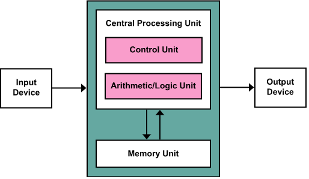

The starting state of the menu will appear collapsed on smaller screens, and will appear non-collapsed on
larger screens. When toggled using the button below, the menu will change.
Make sure to keep all page content within the
#page-content-wrapper
. The top navbar is optional, and just for demonstration. Just create an element with the
#sidebarToggle
ID which will toggle the menu when clicked.
Dashboard
The starting state of the menu will appear collapsed on smaller screens, and will appear non-collapsed on
larger screens. When toggled using the button below, the menu will change.
Make sure to keep all page content within the
#page-content-wrapper
. The top navbar is optional, and just for demonstration. Just create an element with the
#sidebarToggle
ID which will toggle the menu when clicked.
Languages
C
The creation of C was direct result of the need for structured, efficient, high level language that could replace assembly code when
creating system programs.
C was invented and implemented by Dennis Ritchie, on DEC PDP 11 running Unix-OS, in the 1970’s.
C formally standardized in 1989 by ANSI
C programming language (1973) got its name because the language BCPL was replaced with B, and AT&T Bell Labs called the next version "C."
Its purpose was to write the UNIX operating system. C is a relatively small language, making it easy to write compilers.
Its growth mirrored the hardware growth in the 1980s.[49]
Its growth also was because it has the facilities of assembly language, but uses a high-level syntax.
It added advanced features like:
inline assembler.
arithmetic on pointers.
pointers to functions.
bit operations.
freely combining complex operators.
C++
With C programming language, once a project reaches a certain size, its complexity increases and exceeds what a programmer can manage.
To solve this problem, a new way to program was invented, called object oriented programming(oop).
Oop is a methodology that helps organize complex programs through the use of inheritance, encapsulation and polymorphism.
C++ was invented by bjarne stroustop in 1979, at Bell Labs, newjersey, stroustrup initially called the language ‘c-with classes’, in 1983
the name changed to ‘C++’.
C++ extends ‘C’ by adding object oriented features.
Java
Java is a high-level, class-based, object-oriented programming language that is designed to have as few implementation dependencies as
possible.
It is a general-purpose programming language intended to let programmers write once, run anywhere,meaning that compiled Java code can run
on all platforms that support
Java without the need to recompile.[18] Java applications are typically compiled to bytecode that can run on any Java virtual machine
(JVM) regardless of the underlying computer architecture.
The syntax of Java is similar to C and C++, but has fewer low-level facilities than either of them. The Java runtime provides dynamic
capabilities (such as reflection and runtime code modification) that are typically
not available in traditional compiled languages. As of 2019, Java was one of the most popular programming languages in use according to
GitHub,[citation not found][19][20] particularly for client–server web applications, with a reported 9 million developers.[21]
Linux
About
Between applications and hardware
Manage storage, memory, files, GUI, CLI, networking, Utilities, drivers, security, users
Linux originated from Unix, which is leading operating system in 1970 - 1990.
When Unix became commercial, the counter movement for free software foundation started, and Linux fits here.
Also GNU, GNU is a free and open-source operating system, the mission is to use free tools for Unix.
In 1992, Linus Torvalds added Linux kernel to GNU, that completes GNU system.
Distributions
Debian - Ubuntu, Mint, Kali
Redhat - CentOS, Fedora
SUSE - OpenSUSE
Arch Linux - LinHES, Manjaro
Layers of Linux
Kernel - Handles system hardware resources on behalf of the OS user. (using libraries in glibc)
○ User interacts with kernel/glibc using shell.
○ Services interacts with with kernel/glibc using systemd
Desktop - Software designed to manage GUI
Custom Tools - provided by specific Linux distribution (package manager, process manager, etc)
Logging into Linux
Linux distributions will create default administrator user by default.
Root account(administrator level) is unlimited privileges.
Login can happen through console, GUI or ssh.
Users that are a member of the group wheel(redhat), or sudo(ubuntu) can use sudo to run commands with admin
privileges.
Using Commands
Linux is case-sensitive
-- used for long options, - for short options
Targets
Desktop, Servers, Phones, IoT
Internals
Motherboards comes with mini OS, which is hardcoded in H/W called BIOS (Basic input output System) / UEFI
(Unified extensible firmware interface)
- Survey what are the h/w devices connected and available
- Search for storage device with MBR (master boot record) and then mounted
- Bootloader( GRUB) grand unified boot loader executed and load the Linux kernel into memory
- OS will run in different modes/runlevel (0,1,2,3, corresponds to rescue, single user, multi-user with GUI
etc…)
File System
/ Root directory
/bin binary files for system commands
/sbin binary files for system commands in multi user sessions
/boot Linux images and boot configuration files
/dev pseudo files representing devices
/etc configuration files for all softwares
/home owners of user accounts can store their private files
/lib software library components/dependencies
/root root user files
/usr additional libraries, program files
/var Updating files : logs, application data, cache
/proc files representing running system processes
/sys representing system resources
Operating System
Introduction
An operating system (OS) is the program that, after being initially loaded into the computer by a boot
program, manages all of the other application programs in a computer.
The application programs make use of the operating system by making requests for services through a defined
application program interface (API).
In addition, users can interact directly with the operating system through a user interface, such as a
command-line interface (CLI) or a graphical UI (GUI).
Why use an operating system?
An operating system brings powerful benefits to computer software and software development.
Without an operating system, every application would need to include its own UI, as well as the
comprehensive code needed to handle all low-level functionality of the underlying H/W.
Instead, many common tasks, such as sending a network packet or display, can be offloaded to system software
that serves as an intermediary between the applications and the hardware.
The system software provides a consistent and repeatable way for applications to interact with the hardware
without the applications needing to know any details about the hardware.
Once installed, the operating system relies on a vast library of device drivers to tailor OS services to the
specific hardware environment.
Thus, every application may make a common call to a storage device, but the OS receives that call and uses
the corresponding driver to translate the call into actions (commands) needed for the underlying hardware on
that specific computer.
What are the functions of an operating system?
An operating system provides three essential capabilities:
1. It offers a UI through a CLI or GUI;
2. It launches and manages the application execution;
3. It identifies and exposes system hardware resources to those applications -- typically, through a
standardized API.
Additionally, an operating system can perform the following services for applications:
In a multitasking operating system, where multiple programs can be running at the same time, the OS do multi-tasking/ multi-threading.
It handles input/output (I/O) to and from attached hardware devices, such as hard disks, printers and dial-up ports. (Device management)
It sends messages to each application or interactive user -- or to a system operator -- about the status of operation and any errors that
may have occurred.
It can offload the management of batch jobs -- for example, printing -- so that the initiating application is freed from this work.
On computers that can provide parallel processing, an operating system can manage how to divide the program so that it runs on more than
one processor at a time.
Kernel
The kernel is a computer program at the core of a computer's operating system and generally has complete control over everything in the system.
It is the portion of the operating system code that is always resident in memory and facilitates interactions between hardware and software components.
A full kernel controls all hardware resources (e.g. I/O, memory, cryptography) via device drivers, arbitrates conflicts between processes
concerning such resources, and optimizes the utilization of common
resources e.g. CPU & cache usage, file systems, and network sockets.
Computer is a machine that can be programmed to carry out sequences of arithmetic or logical operations (computation) automatically.
Hardware includes the physical parts of a computer, such as central processing unit (CPU), random access memory (RAM), Input/Output devices and motherboard.
Software is the set of instructions that can be stored and run by hardware.
Hardware is so-termed because it is "hard" or rigid with respect to changes, whereas software is "soft" because it is easy to change.
Hardware is typically directed by the software to execute any command or instruction, this combination of hardware and software forms a usable computing system.
Von Neumann architecture
The template for all modern computers is the Von Neumann architecture, detailed in a 1945 paper by Hungarian mathematician John von Neumann.
This describes a design architecture for an electronic digital computer with subdivisions of a processing unit consisting of an arithmetic logic unit and processor registers,
a control unit containing an instruction register and program counter, a memory to store both data and instructions, external mass storage, and input and output mechanisms.

Input device
Input devices allow the user to enter information into the system, or control its operation.
Most personal computers have a mouse and keyboard, but laptop systems typically use a touchpad instead of a mouse.
Other input devices include webcams, microphones, joysticks, and image scanners.
Output device
Output devices are designed around the senses of human beings.
For example, monitors display text that can be read, speakers produce sound that can be heard. Such devices also could include printers or a Braille embosser.
Storage devices
A storage device is any computing hardware and digital media that is used for storing, porting and extracting data files and objects.
It can hold and store information both temporarily and permanently and can be internal or external to a computer, server or any similar computing device.
Data storage is a core function and fundamental component of computers. Dedicated storage devices include RAIDs and tape libraries.
Fixed media
Data is stored by a computer using a variety of media.
Hard disk drives (HDDs) are found in virtually all older computers, due to their high capacity and low cost, but solid-state drives (SSDs) are faster and more power efficient.
Removable media
To transfer data between computers, an external flash memory device (such as a memory card or USB flash drive) or optical disc (CD-ROM, DVD-ROM or BD-ROM) may be used.
The majority of machines have an optical disk drive (ODD), and virtually all have at least one Universal Serial Bus (USB) port.
Additionally, USB sticks are typically pre-formatted with the FAT32 file system, which is widely supported across operating systems.
Motherboard
The motherboard is the main component of a computer.
It is a board with integrated circuitry that connects the other parts of the computer including the CPU, the RAM, the disk drives (CD, DVD, hard disk, or any others)
as well as any peripherals connected via the ports or the expansion slots.
The integrated circuit (IC) chips in a computer typically contain billions of tiny metal–oxide–semiconductor field-effect transistors (MOSFETs).
Components directly attached to or to part of the motherboard include
CPU (central processing unit), which performs most of the calculations which enable a computer to function,
and is referred to as the brain of the computer.
It takes program instructions from RAM, interprets and processes them and then sends back results so that
the relevant components can carry out the instructions.
The CPU is a microprocessor, which is fabricated on a metal–oxide–semiconductor (MOS) integrated circuit
(IC) chip.
It is usually cooled by a heatsink and fan, or water-cooling system. Many newer CPUs include an on-die
graphics processing unit (GPU).
The clock speed of the CPU governs how fast it executes instructions and is measured in GHz; typical values
lie between 1 GHz and 5 GHz.
Many modern computers have the option to overclock the CPU which enhances performance at the expense of
greater thermal output and thus a need for improved cooling.
The chipset, which includes the north bridge, mediates communication between the CPU and the other
components of the system, including main memory;
as well as south bridge, which is connected to the north bridge, and supports auxiliary interfaces and
buses; and, finally, a Super I/O chip,
connected through the south bridge, which supports the slowest and most legacy components like serial ports,
hardware monitoring and fan control.
Random-access memory (RAM), which stores the code and data that are being actively accessed by the CPU.
For example, when a web browser is opened on the computer it takes up memory; this is stored in the RAM
until the web browser is closed.
It is typically a type of dynamic RAM (DRAM), such as synchronous DRAM (SDRAM), where MOS memory chips store
data on memory cells consisting of MOSFETs and MOS capacitors.
RAM usually comes on dual in-line memory modules (DIMMs) in the sizes of 2GB, 4GB, and 8GB, but can be much
larger.
Read-only memory (ROM), which stores the BIOS that runs when the computer is powered on or otherwise begins
execution,
a process known as Bootstrapping, or "booting" or "booting up". The ROM is typically a non-volatile BIOS
memory chip, which stores data on floating-gate MOSFET memory cells.
The BIOS (Basic Input Output System) includes boot firmware and power management firmware.
Newer motherboards use Unified Extensible Firmware Interface (UEFI) instead of BIOS.
Buses that connect the CPU to various internal components and to expand cards for graphics and sound.
The CMOS (complementary MOS) battery, which powers the CMOS memory for date and time in the BIOS chip. This
battery is generally a watch battery.
The video card (also known as the graphics card), which processes computer graphics. More powerful graphics
cards are better suited to handle strenuous tasks,
such as playing intensive video games or running computer graphics software. A video card contains a
graphics processing unit (GPU)
and video memory (typically a type of SDRAM), both fabricated on MOS integrated circuit (MOS IC) chips.
Power MOSFETs make up the voltage regulator module (VRM), which controls how much voltage other hardware
components receive.